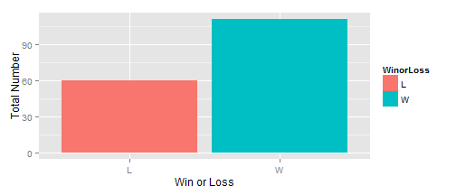
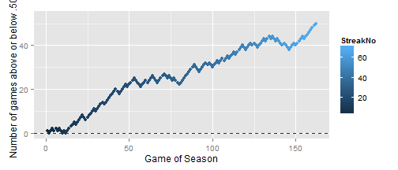
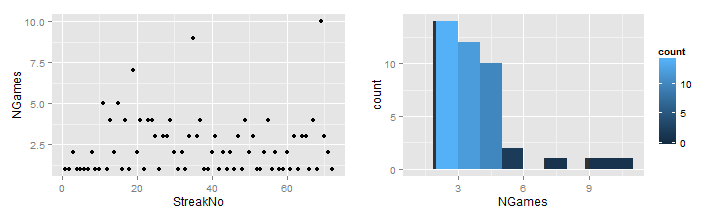

The Atlanta Braves Season Explorer
presented by Daniel Moore...
- Data from 1975 - 2013
- Located here
- demonstrations of charts here are from the 1998 season
presented by Daniel Moore...
The Season Explorer is very easy to use. Simply select a year from the drop down box and four charts are created, giving an overview of the ups and downs of the season along with a summary of the season highlights
The main purpose of this chart is to show the total number of wins and losses for the season.
A good season, of course, consists of vastly more wins than losses :)

The baseball season is a long season (162 games!). One way to envision the story of that season is to look at the number of games that the team is above .500 as the season progresses. It's a good way to see the ups and downs of the season, when the team surged and when it slipped, and how consistent the team was throughout the year.

Some years, teams are streakier than other years, they tend to have long stretches of winning and losing as opposed to more consistency. One way to see how streaky a team is during a season is to look at the length of streaks throughout the season, both as the season progresses, as in the first chart and as a distribution, as in the second chart. These charts give a quick overview of this (removing the most common case of streaks of length 1).
